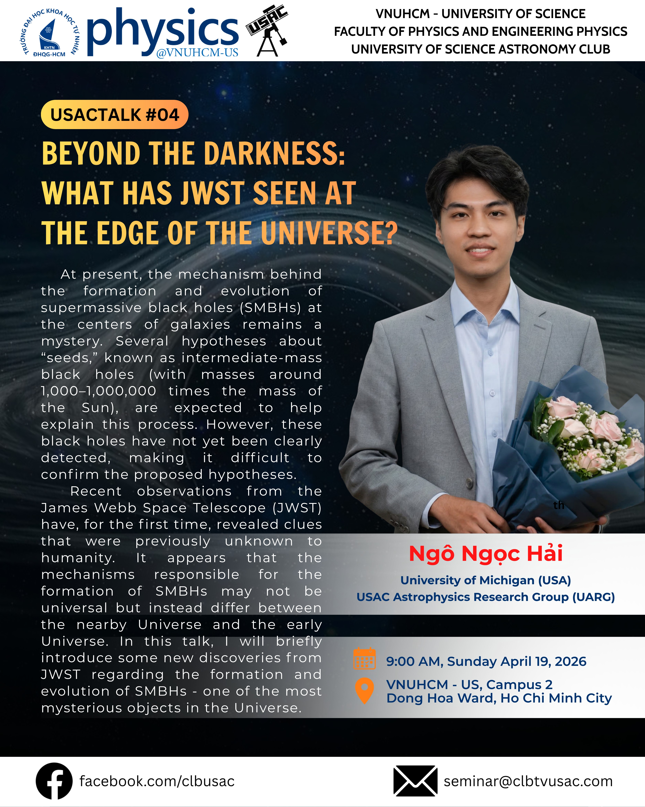
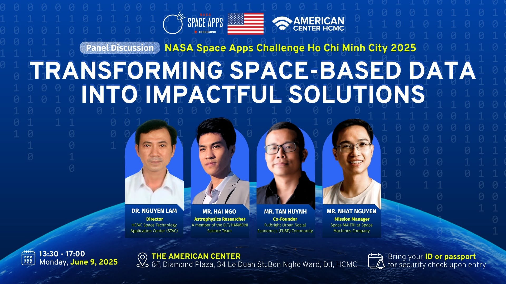

Outreach
Public Talks & Community Science
Hai Ngo Ngoc is the founder (since 2016) and current Scientific Advisor of the University of Science Astronomy Club (USAC), bringing black hole astrophysics to students and the public through seminars, USACTalks, and outreach activities.

USACTalk #04Beyond the Darkness
What has JWST seen at the edge of the universe?
Outreach · Public Seminar
Beyond the Darkness: What Has JWST Seen at the Edge of the Universe?
A USAC seminar on how JWST is rewriting the timeline of the earliest galaxies and supermassive black holes - from Little Red Dots to the race between light and heavy seeds.

Outreach · Panel Discussion
Transforming Space-Based Data into Impactful Solutions
A panel at NASA Space Apps Challenge Ho Chi Minh City 2025, with Hai Ngo joining as an astrophysics researcher and member of the ELT/HARMONI Science Team.